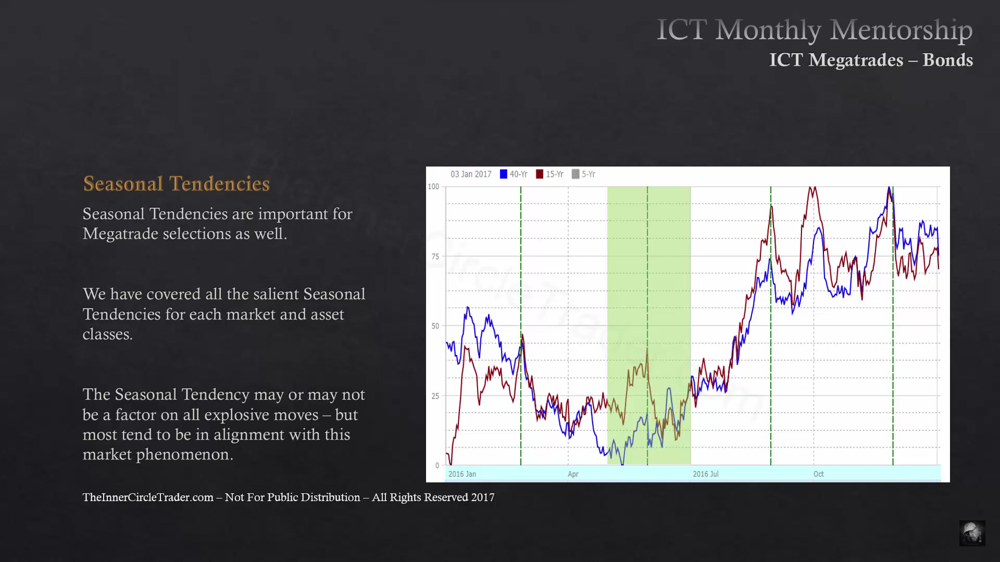
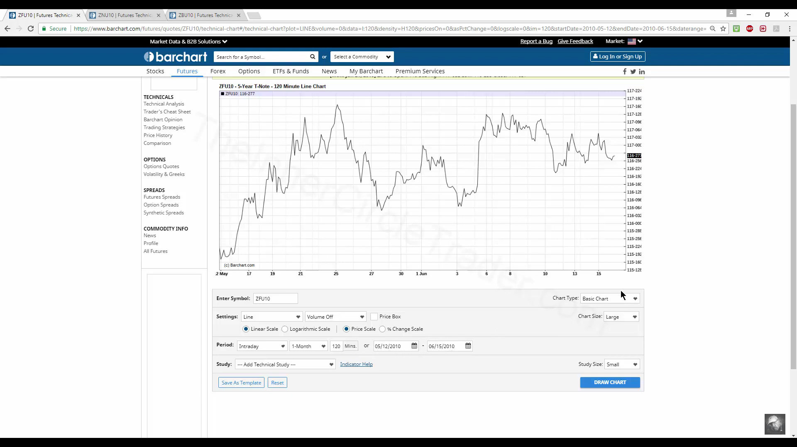

Bond Mega-Trades
Bond Mega-Trades
Saisonales HTF-Swing-Modell für 30-Year Treasuries.
Ablauf
- Zeitfenster abwarten: Mai/Juni ist das Nr.-1-Setup für einen Long-Einstieg (kein Naturgesetz — weitere Faktoren einbeziehen).
- Warten auf eine Higher-Timeframe-PD (Weekly/Monthly), die respektiert wird — optimal ein Discount-Markt.
- SMT-Scan zwischen 5-, 10- und 30-Year-Yields.
- Erwartetes High: Anfang Herbst (Rally im Sep/Okt/Nov kann sich zum Swingtrade entwickeln).
- Nicht übertraden — dem Trend folgen.

SMT / Crack in Correlation
Frühwarnsignal für ein Swing Low: 5-Year macht Lower Low, 10-Year failed (Higher Low), 30-Year Equal Lows → Korrelation bricht auseinander. 3 Lows nutzen, um SMT zu bestätigen; Wicks zur Absicherung heranziehen.

Crack in Correlation: 5-Year Lower Low, 10-Year Higher Low, 30-Year Equal Lows — das Frühwarnzeichen für das Swing-Low im Mai/Juni-Fenster.
Analyseinstrumente: relative Stärke (RSI) zeigt an, wann Smart Money in großer Stückzahl kauft; 5-/10-Year Notes werden mit dem 30-Year-Markt verglichen.
Verwandt
- Classic Swing Trading Approach
- ⚠️ "SMT" als eigenständiges Konzept (Smart Money Divergence) taucht hier nur im Bond-Kontext auf — eigene Konzept-Seite lohnt sich, sobald eine allgemeinere Quelle dazu ingested wird.
Was zeigt hierher 10
- Bond Mega-Trades (Source)Quellen
- Classic Swing Trading ApproachModelle
- Commodity Mega-TradesModelle
- Katalog (Original)Meta
- Intermarket RelationshipsKonzepte
- Month 11 (Source)Quellen
- Seasonal TendencyKonzepte
- Smart Money Concepts (SMC)Konzepte
- SMT (Smart Money Divergence)Konzepte
- Stock Mega-TradesModelle